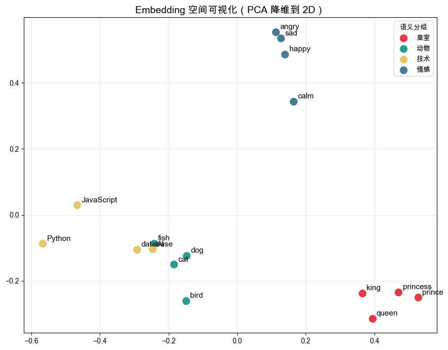

02 · Embeddings#
上一章我们知道了 LLM 把文本切成 token。但模型无法直接处理文字， 它需要把每个 token 转成一串数字——这就是 Embedding（嵌入）。
Embedding 的神奇之处在于：语义相近的文本，在向量空间里距离也近。 这让「语义搜索」、「推荐系统」、「RAG」成为可能。
本章用代码把这个过程跑通，并做几个有趣的实验。
1. Embedding 是什么#
Embedding 是一个高维浮点数向量，把文本的语义压缩进去。
"猫" → [0.21, -0.54, 0.87, ...] （1536 维）
"猫咪" → [0.23, -0.51, 0.85, ...] （语义近，向量近）
"汽车" → [-0.62, 0.33, -0.14, ...]（语义远，向量远）
关键属性：
维度固定：同一个模型输出的向量维度始终一样（如 1536 维）
长度归一化：向量长度通常为 1（单位向量），方便计算相似度
语义可运算：向量之间可以做加减法，结果有语义意义
import os
import numpy as np
from dotenv import load_dotenv
import litellm
load_dotenv()
def get_embedding(text: str, model: str = None) -> np.ndarray:
"""获取文本的 embedding 向量。"""
# 根据 LLM_PROVIDER 自动选择 embedding 模型
if model is None:
llm_model = os.getenv("LLM_MODEL", "")
if "anthropic" in llm_model:
# Anthropic 没有独立 embedding API，用 OpenAI 兼容模型
model = "openai/text-embedding-3-small"
elif "gemini" in llm_model:
model = "gemini/text-embedding-004"
else:
model = "openai/text-embedding-3-small"
response = litellm.embedding(model=model, input=[text])
return np.array(response.data[0]["embedding"])
# 试一试
vec = get_embedding("人工智能")
print(f"向量维度: {vec.shape}")
print(f"前 8 个值: {vec[:8].round(4)}")
print(f"向量模长: {np.linalg.norm(vec):.4f}") # 应接近 1.0
向量维度: (1536,)
前 8 个值: [ 0.0143 0.0217 0.015 0.0176 0.0379 -0.0286 -0.014 0.0348]
向量模长: 0.9998
注意：Anthropic 没有独立的 embedding API。 如果你的
.env配置的是 Anthropic，需要额外设置OPENAI_API_KEY来运行本章的 embedding 部分。 或者把model参数改成你有权限的 embedding 模型。
2. 余弦相似度#
两个向量的余弦相似度是衡量语义相近程度的标准方式：
$$\text{similarity}(A, B) = \frac{A \cdot B}{|A| |B|}$$
结果范围：
-1到11.0→ 完全相同方向（语义完全相似）0.0→ 垂直（语义无关）-1.0→ 完全相反方向（语义相反，实践中少见）
因为 embedding 通常已归一化（模长=1），所以余弦相似度就等于点积。
def cosine_similarity(a: np.ndarray, b: np.ndarray) -> float:
"""计算两个向量的余弦相似度。"""
return float(np.dot(a, b) / (np.linalg.norm(a) * np.linalg.norm(b)))
# 几组对比
pairs = [
("猫", "猫咪"),
("猫", "狗"),
("猫", "汽车"),
("人工智能", "AI"),
("人工智能", "机器学习"),
("人工智能", "足球"),
("happy", "sad"),
("happy", "joyful"),
]
print(f"{'文本 A':12} {'文本 B':12} {'相似度':>8}")
print("-" * 38)
for a, b in pairs:
sim = cosine_similarity(get_embedding(a), get_embedding(b))
bar = "█" * int(sim * 20)
print(f"{a:12} {b:12} {sim:8.4f} {bar}")
文本 A 文本 B 相似度
--------------------------------------
猫 猫咪 0.7639 ███████████████
猫 狗 0.6647 █████████████
猫 汽车 0.4200 ████████
人工智能 AI 0.4651 █████████
人工智能 机器学习 0.5746 ███████████
人工智能 足球 0.2161 ████
happy sad 0.6101 ████████████
happy joyful 0.6350 ████████████
3. 语义搜索#
Embedding 最直接的应用：给一个查询，从一堆文本里找最相关的。 这就是 RAG（检索增强生成） 的核心机制。
# 知识库：一些句子
documents = [
"Python 是一种广泛用于数据科学和 AI 的编程语言。",
"猫是一种独立性强的宠物，通常不需要太多照料。",
"深度学习是机器学习的一个子领域，使用神经网络。",
"巴黎是法国的首都，以埃菲尔铁塔闻名。",
"Transformer 架构彻底改变了自然语言处理领域。",
"足球是世界上最受欢迎的运动之一。",
"向量数据库专门用于存储和检索高维向量。",
"咖啡含有咖啡因，能帮助人保持清醒。",
]
# 预计算所有文档的 embedding
print("正在计算文档 embeddings...")
doc_embeddings = [get_embedding(doc) for doc in documents]
print(f"完成，共 {len(doc_embeddings)} 个向量")
正在计算文档 embeddings...
完成，共 8 个向量
def semantic_search(query: str, top_k: int = 3) -> list:
"""语义搜索：返回最相关的 top_k 个文档。"""
query_emb = get_embedding(query)
scores = [
(cosine_similarity(query_emb, doc_emb), doc)
for doc_emb, doc in zip(doc_embeddings, documents)
]
scores.sort(reverse=True)
return scores[:top_k]
# 测试几个查询
queries = [
"如何学习机器学习？",
"我想养一只小动物",
"LLM 的底层原理是什么？",
]
for query in queries:
print(f"\n🔍 查询: {query}")
results = semantic_search(query)
for i, (score, doc) in enumerate(results, 1):
print(f" {i}. [{score:.4f}] {doc}")
🔍 查询: 如何学习机器学习？
1. [0.5247] 深度学习是机器学习的一个子领域，使用神经网络。
2. [0.3096] Python 是一种广泛用于数据科学和 AI 的编程语言。
3. [0.2456] Transformer 架构彻底改变了自然语言处理领域。
🔍 查询: 我想养一只小动物
1. [0.3414] 猫是一种独立性强的宠物，通常不需要太多照料。
2. [0.1823] 深度学习是机器学习的一个子领域，使用神经网络。
3. [0.1635] Python 是一种广泛用于数据科学和 AI 的编程语言。
🔍 查询: LLM 的底层原理是什么？
1. [0.3256] 深度学习是机器学习的一个子领域，使用神经网络。
2. [0.2732] Transformer 架构彻底改变了自然语言处理领域。
3. [0.1538] 咖啡含有咖啡因，能帮助人保持清醒。
注意：查询「如何学习机器学习？」能找到关于深度学习和 Transformer 的文档， 即使它们没有共同的关键词——这就是语义搜索比关键词搜索强的地方。
4. 有趣实验：向量运算有语义#
著名的 Word2Vec 实验：king - man + woman ≈ queen
这说明 embedding 空间里的方向是有意义的， 比如「男性→女性」的方向在向量空间里是一致的。
# 预先获取所有需要的词的 embedding
words = ["king", "man", "woman", "queen", "prince", "princess",
"actor", "actress", "uncle", "aunt"]
word_embeddings = {w: get_embedding(w) for w in words}
def analogy(a: str, b: str, c: str, candidates: list) -> str:
"""
a - b + c = ?
例：king - man + woman = ?
"""
target = word_embeddings[a] - word_embeddings[b] + word_embeddings[c]
# 归一化
target = target / np.linalg.norm(target)
best_word, best_score = "", -1
for word in candidates:
if word in (a, b, c):
continue
score = cosine_similarity(target, word_embeddings[word])
if score > best_score:
best_score, best_word = score, word
return best_word, best_score
analogies = [
("king", "man", "woman"), # → queen
("prince", "man", "woman"), # → princess
("actor", "man", "woman"), # → actress
("uncle", "man", "woman"), # → aunt
]
print(f"{'公式':30} {'预测':10} {'相似度':>8}")
print("-" * 52)
for a, b, c in analogies:
result, score = analogy(a, b, c, words)
formula = f"{a} - {b} + {c}"
print(f"{formula:30} {result:10} {score:8.4f}")
公式 预测 相似度
----------------------------------------------------
king - man + woman queen 0.6161
prince - man + woman princess 0.6850
actor - man + woman actress 0.6339
uncle - man + woman aunt 0.6909
5. 可视化：PCA 降维到 2D#
1536 维的向量没法直接看，用 PCA 压缩到 2 维后可以画出来， 直观感受哪些词在语义空间里「住得近」。
import matplotlib.pyplot as plt
import matplotlib
from sklearn.decomposition import PCA
matplotlib.rcParams["font.family"] = ["Arial Unicode MS", "sans-serif"]
# 准备词组
groups = {
"皇室": ["king", "queen", "prince", "princess"],
"动物": ["cat", "dog", "bird", "fish"],
"技术": ["Python", "JavaScript", "AI", "database"],
"情感": ["happy", "sad", "angry", "calm"],
}
all_words = [w for ws in groups.values() for w in ws]
all_embs = [get_embedding(w) for w in all_words]
# PCA 降维
pca = PCA(n_components=2)
coords = pca.fit_transform(np.array(all_embs))
# 画图
colors = ["#E63946", "#2A9D8F", "#E9C46A", "#457B9D"]
fig, ax = plt.subplots(figsize=(9, 7))
idx = 0
for (group_name, group_words), color in zip(groups.items(), colors):
n = len(group_words)
xs = coords[idx:idx+n, 0]
ys = coords[idx:idx+n, 1]
ax.scatter(xs, ys, color=color, s=100, label=group_name, zorder=3)
for x, y, word in zip(xs, ys, group_words):
ax.annotate(word, (x, y), textcoords="offset points",
xytext=(6, 4), fontsize=11)
idx += n
ax.set_title("Embedding 空间可视化（PCA 降维到 2D）", fontsize=14)
ax.legend(title="语义分组")
ax.grid(True, alpha=0.3)
plt.tight_layout()
plt.show()
print(f"PCA 保留方差: {pca.explained_variance_ratio_.sum():.1%}")

PCA 保留方差: 28.4%
6. 用 LLM 结合 Embedding 做问答#
把「语义搜索」和「LLM 生成」串起来，这就是最简单的 RAG 雏形： 先检索，再生成。
from utils.llm_client import chat
def rag_answer(question: str, top_k: int = 2) -> str:
"""最简单的 RAG：检索相关文档 → 送给 LLM 生成答案。"""
# 1. 检索
results = semantic_search(question, top_k=top_k)
context = "\n".join(f"- {doc}" for _, doc in results)
# 2. 生成
prompt = f"""根据以下参考资料回答问题，只使用资料中的信息，不要发挥。
参考资料：
{context}
问题：{question}
回答："""
return chat(prompt)
question = "LLM 和神经网络有什么关系？"
print(f"问题: {question}")
print(f"\n答案:\n{rag_answer(question)}")
问题: LLM 和神经网络有什么关系？
答案:
资料中没有直接说明“LLM（大型语言模型）”与神经网络的关系。资料仅给出两点信息：1) 深度学习是机器学习的一个子领域，使用神经网络；2) Transformer 架构彻底改变了自然语言处理领域。由这些资料本身无法得出关于 LLM 与神经网络的具体关系。
小结#
概念 |
要点 |
|---|---|
Embedding |
将文本映射为固定维度的浮点向量，语义相近则向量相近 |
余弦相似度 |
衡量两个向量方向的接近程度，范围 -1 到 1 |
语义搜索 |
用 embedding 找语义最相近的文档，不依赖关键词匹配 |
向量运算 |
embedding 空间的方向有意义，支持类比推理 |
RAG 雏形 |
检索 → 生成，是 Module 4 RAG 章节的基础 |
下一章 → Context Window：上下文窗口的本质、限制与实战策略